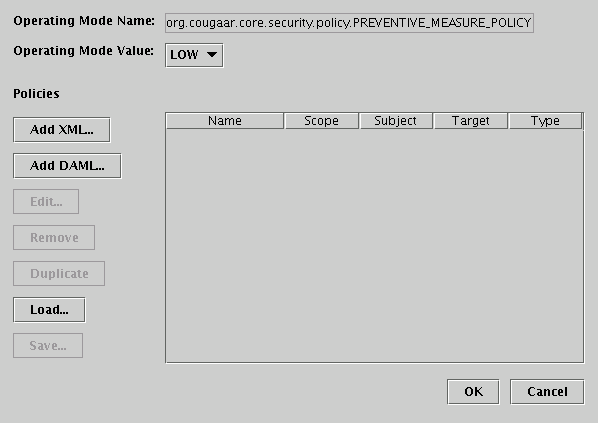

KPAT HOW-TO
- To start the KPAT policy editor on Linux, first edit the runKPAT script
to set appropriate properties. The script can be found under test/configs/demo
or the safe module (bin directory). Configure the host name where the domain
manager is running and the http port number.
- The society must be running before launching the policy editor, and
all the agents in the society must have registered to the domain manager.
- Execute the runKPAT script. All the agents should be visible in the
left panel.
Unconditional policies
- To set a policy for a specific agent, select the agent in the left
panel. To set a policy for the entire domain, select the domain.
- On the right panel, Click the "Add..." button. A new window pops up.
- Type the following parameters:
Name: a name for the policy
Description: a description of that policy. (optional)
Type: see below in the "policy type" section.
- Click the "New" button to select a new policy parameter, then click
on the "import XML" button. Select the appropriate XML policy file.
NOTE: the XML files are in the $COUGAAR_INSTALL_PATH/configs/security
directory. Type the name of the file without the full path.
- Click the "in force" check box.
- Click "XML Content" in the "Allowed Attributes" window.
- Click ">> Select >>" button, "XML Content" added to the
"Selected Attributes" window.
- Click "OK" pop up window closes.
- In the Main window, click "Commit" on the lower right.
Conditional policies
Conditional policies are policies that may change depending on the value of
an operating mode. Currently, KPAT supports one policy operating mode, which
can be either LOW or HIGH. For each policy operating mode value, a set of
policies can be selected.
For instance, the LOW mode can specify that users can log in using either
a password or a certificate. In the HIGH mode, users are required to provide
a certificate. Users with a password will not be allowed to log in.
Two ServletPolicy files have been written for each policy operating mode.
Select the ThreatConLOW.ServletPolicy.xml for the LOW operating mode and
ThreatConHIGH.ServletPolicy.xml for the HIGH operating mode.

- Click the "Add" button in the "Conditional Policies" frame to create
a new conditional policy.

- The "Edit Condtional Policy" pop-up window is displayed. It shows the
org.cougaar.core.security.policy.PREVENTIVE_MEASURE_POLICY operating mode
can be used to control conditional policies.
- Select the value of the operating mode for which you want to apply
a set of security policies. For instance, select the "LOW" value.
- Click on the "Add XML" button to add the policy for the value you have
chosen.
- A pop-up window with the domain structure shows up. Select the entity
that must enforce the conditional policy. If the policy applies to the
entire domain, select the domain.
- Add the new policy as described in "Unconditional policies", step 2
to 9. Note: for servlet policy, enter org.cougaar.core.security.policy.ServletPolicy
in the "type" field
- Click "OK" to return to the main window. You should see one new
line in the "Conditional policies" frame with the value of the policy
mode you have selected and the name of the policy.
- Repeat step 1 to 7 with a different value for the operating mode.
- In the Main window, click "Commit" on the lower right.
Policy type
The policy type can be one of:
- org.cougaar.core.security.policy.AccessControlPolicy
The AccessControlPolicy is used to perform access control on
messages flowing between Cougaar agents. For instance, agents may or may
not accept messages from other agents, or may accept only a limited set
of messages.
- org.cougaar.core.security.policy.BlackboardFilterPolicy
The BlackboardFilterPolicy is used to control access to the blackboard
by servlets. For instance, some users may be allowed to read and write
blackboard objects, while other users may have read-only access to blackboard
objects.
- org.cougaar.core.security.policy.CryptoPolicy
The CryptoPolicy is used to control the cryptographic policy
when sending or receiving messages.
- org.cougaar.core.security.policy.DataProtectionPolicy
The DataProtectionPolicy is used to control how persisted data
is protected.
- org.cougaar.core.security.policy.LdapUserServicePolicy
The LdapUserServicePolicy is used to control access to the user
and role database.
- org.cougaar.core.security.policy.ServletPolicy
The ServletPolicy is used to enforce user access control on serlvets.
NOTE: If you want to change the policy, go edit the xml policy file, then
in above step 5, instead of click "Add...", click "Edit"; also click "Edit"
in step 7, "<< Deselect <<" the "XML content", and redo the
"Import XML", then repeat step 9-12.
NOTE: If you restart the society, you need to restart KPAT too, previous
instance won't run with the new society, this may be fixed later.